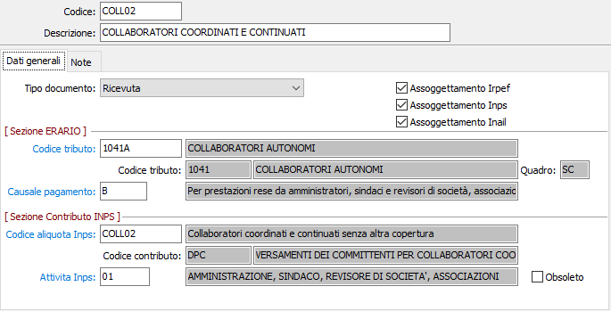
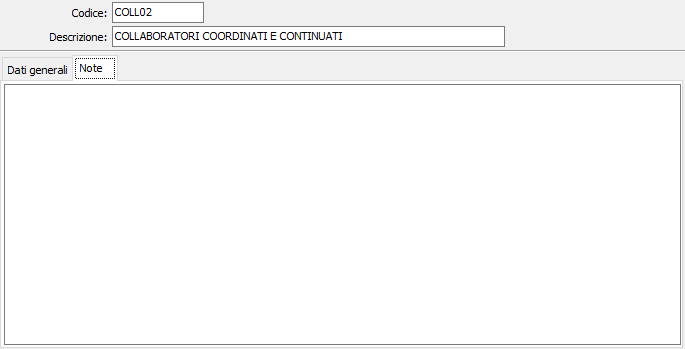

Tipologie collaborazione
L’utente costruisce, per ciascun tipo di collaborazione, un apposito codice di tabella attivando o meno i correlativi trattamenti ai fini Ritenute d’acconto, contributo Inps, dati GLAD, Inail, ecc.
Il codice di un adeguato tipo di collaborazione viene inserito nell’anagrafica percipienti come tipo preferenziale di collaborazione, al fine della proposizione automatica all’atto dell’inserimento del compenso. Tuttavia la proposizione del tipo preferenziale può essere modificata al momento della registrazione contabile perché non è obbligatorio che lo stesso percipiente esegua sempre lo stesso tipo di collaborazione.

CODICE TIPO COLLABORAZIONE: campo alfanumerico di 8 caratteri per definire il tipo di collaborazione. Sono attive le funzioni di ricerca (F9) sulla tabella stessa.
DESCRIZIONE: campo alfanumerico di 60 caratteri per descrivere il tipo di collaborazione.
TIPO DOCUMENTO: indica il tipo di documentazione richiesta per il tipo di collaborazione attiva. Valori ammessi: Ricevuta; Fattura.
ASSOGGETTAMENTO IRPEF: check box per abilitare l’assoggettamento a ritenuta d’acconto del tipo di collaborazione attiva.
ASSOGGETTAMENTO INPS: check box per abilitare l’assoggettamento a contributo INPS del tipo di collaborazione attiva.
ASSOGGETTAMENTO INAIL: check box per abilitare l’assoggettamento ad assicurazione INAIL del tipo di collaborazione attiva.
CODICE TRIBUTO: codice alfanumerico di 8 caratteri, presente nella tabella Codici tributo, per definire l’aliquota da applicare per il tipo di collaborazione in esame. Sul campo sono attive le funzioni di ricerca (F9) ed accesso rapido (CTRL+W) alla tabella stessa. A conferma viene visualizzata la descrizione, il codice tributo e la relativa descrizione, il quadro del modello 770. Dati desunti dalla tabella stessa.
CAUSALE PAGAMENTO: codice alfanumerico di 1 carattere, presente nella tabella Causali di pagamento, per definire la causale da applicare per il tipo di collaborazione in esame. Sul campo sono attive le funzioni di ricerca (F9) e di accesso rapido (CTRL+W) alla tabella stessa.
CODICE ALIQUOTA INPS: codice alfanumerico di 8 caratteri, presente nella tabella Codici Inps, per definire l’aliquota da applicare per il tipo di collaborazione in esame. Sul campo sono attive le funzioni di ricerca (F9) e di accesso rapido (CTRL+W) alla tabella stessa.
CODICE ATTIVITÀ INPS: codice alfanumerico di 2 carattere, presente nella tabella Codici attività Inps, per definire il codice da applicare per il tipo di collaborazione in esame. Sul campo sono attive le funzioni di ricerca (F9) e di accesso rapido (CTRL+W) alla tabella stessa.
La seconda pagina contiene un campo note di libero utilizzo da parte dell'utente.
